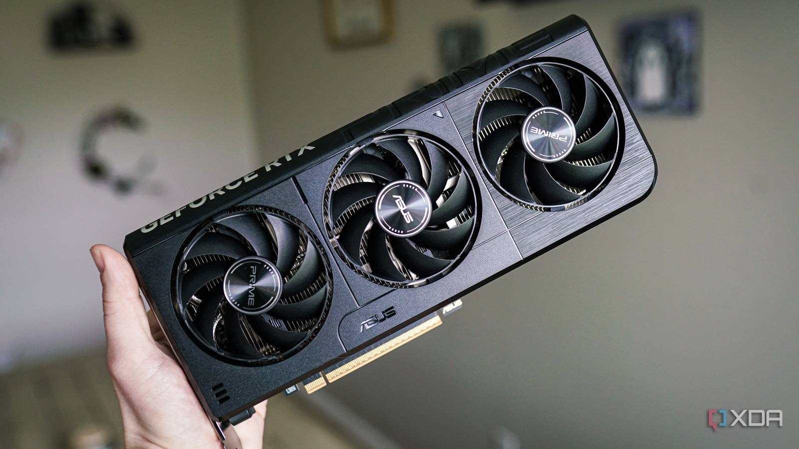

Si venías pensando en cambiar la placa de video, hay un dato para seguir de cerca. Según reportes publicados este miércoles, Nvidia le avisó a sus socios ensambladores que recibirán entre 20% y 30% menos de chips gaming en el trimestre que va de noviembre de 2026 a enero de 2027. Importante desde el arranque: Nvidia no lo confirmó.
De dónde sale
El origen es Board Channels, un foro chino de la industria, y lo difundió el sitio especializado VideoCardz. Medios como Club386, PC Guide y Shacknews lo levantaron con la misma cifra. Esto es lo que dice y lo que no:
- El recorte alcanzaría a la asignación para fabricantes de placas (las marcas que arman las GeForce que comprás).
- El mismo reporte sostiene que el trimestre anterior ya venía muy ajustado.
- No identifica qué modelos de RTX se verían afectados.
- El texto citado habla del mercado chino. Club386 estima que eso no deja afuera al resto del mundo, pero es una lectura del medio.
¿Van a subir los precios?
El reporte anticipa disponibilidad limitada y precios volátiles. Club386 va más allá y espera nuevos aumentos. Ninguna de las fuentes que leímos da un porcentaje, y no encontramos datos específicos sobre Argentina.
Qué dijo Nvidia en sus números
El 17 de noviembre la empresa presentó su último balance. Ya no informa la facturación de GeForce por separado: la incluye en Edge Computing, junto con PC, estaciones de trabajo, robótica y autos, entre otros. Esa división facturó USD 8.200 millones, 42% más que un año antes y 14% más que el trimestre anterior.
En el comentario de la directora financiera aparece una advertencia relacionada: los precios más altos de la memoria y de los equipos siguen afectando la demanda de PC de consumo (la traducción es nuestra). El documento también muestra que Nvidia elevó sus compromisos de suministro a USD 390.000 millones, principalmente por compras de memoria a varios años para toda la compañía. En esos documentos no encontramos ningún anuncio de recorte para GeForce.
El contexto
No es la primera señal de un mercado complicado. Este mes ya te contamos que Nvidia sacó la RTX 5080 de su tienda online y que AMD subiría otra vez los precios de las Radeon RX 9000 por la memoria.
Qué haríamos nosotros
No salir corriendo por un rumor. Si ya tenías decidido actualizar, aprovechá estos días de ofertas para comparar precios y stock en varias tiendas locales, y mirá el valor final con impuestos y cuotas. Si tu placa todavía rinde en los juegos que usás, podés esperar a ver si esto se confirma. Cualquier novedad oficial la vamos a contar acá.
Fuentes: Club386, PC Guide y Shacknews (25 de noviembre de 2026); comunicado y comentario financiero del tercer trimestre fiscal 2027 de Nvidia presentados ante la SEC. Imagen: XDA, archivo de PuntoDeSpawn.